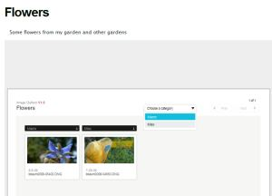

Image Gallery
http://tonyyoo.com/gallery/ImageGallery.zip
Features
- Smart image preloading
- Thumbnail navigation
- Slideshow
- Support for image captions
- No "Download Originals" link
- No Exif display
- No markup and no umlauts in image descriptions
- Flash based
- Support for multiple storyboards per page